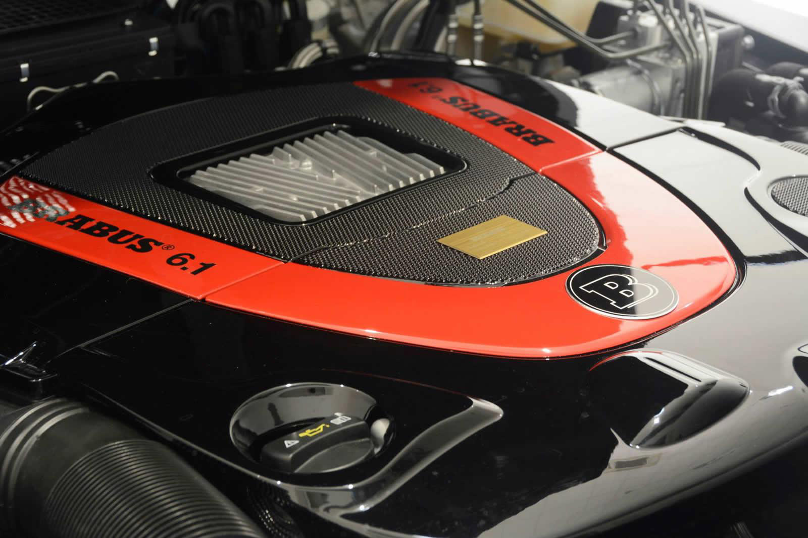

История
Brabus Рекорды
Как частное тюнинг-ателье основано в 1977 году Клаусом Бракманом (нем. Klaus Brackmann) и Бодо Бушманом (нем. Bodo Buschmann) в Ботропе, название происходит от сложения начальных букв фамилий её создателей. Основатели компании занимались продажей автомобилей марки «Mercedes-Benz», однако позже решили заняться тюнингом для индивидуализации транспортных средств. Является крупнейшим в мире независимым тюнинговым ателье. В 1999 году стало подразделением DaimlerChrysler в. Конкуренты — AMG, Lorinser, Carlsson, Kleemann, и RENNtech.
Ателье фокусирует внимание на том, чтобы автомобиль достигал максимальных рабочих характеристик путём увеличения мощности и крутящего момента. Клиенты могут или купить автомобиль прямо от Brabus или отправить свой Mercedes на глубокую переделку. Ателье ориентировано на дорогой и эксклюзивный тюнинг.
Среди простых программ тюнинга предлагается установка низкопрофильных покрышек, спойлеров, аэродинамических обвесов, кованых дисков собственного дизайна. Более сложные модернизации включают модификации технической начинки автомобилей, в частности, при переработке двигателя растачивается блок двигателя, дорабатывается головка блока, дорабатываются или ставятся новые поршни, коленвал, клапаны и другие детали, все двигатели собираются вручную и в конце ставится фирменная табличка с личной подписью моториста. Также осуществляется доработка интерьера автомобиля на заказ, установка аксессуаров (педалей, накладок, установка мультимедиа-систем с мониторами).